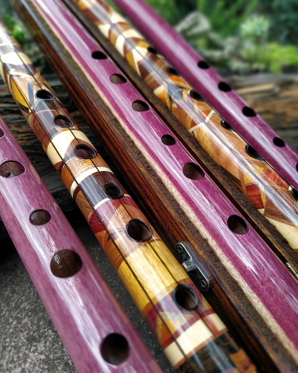
Flautas transversais
Pífano é flauta transversal: um furo de sopro e seis para os dedos. Faço em PVC, em bambu e em madeira, em qualquer tom do Ré grave para cima, e a flauta irlandesa em Ré grave (Low D).
Pífanos de bambu
Uso bambu da espécie Bambusa tuldoides. Separo cada vara pelo diâmetro interno e pela espessura de parede, e é o bambu que me diz em que tom ele vai virar flauta. Tom grave pede vara grossa, por isso confirmo se tenho o material antes de fechar.
A flauta de bambu é sempre de corpo único, sem encaixe. Acabamento em goma-laca ou óleo de amêndoas; porta-lábios, marchetaria e resina epóxi são opcionais.

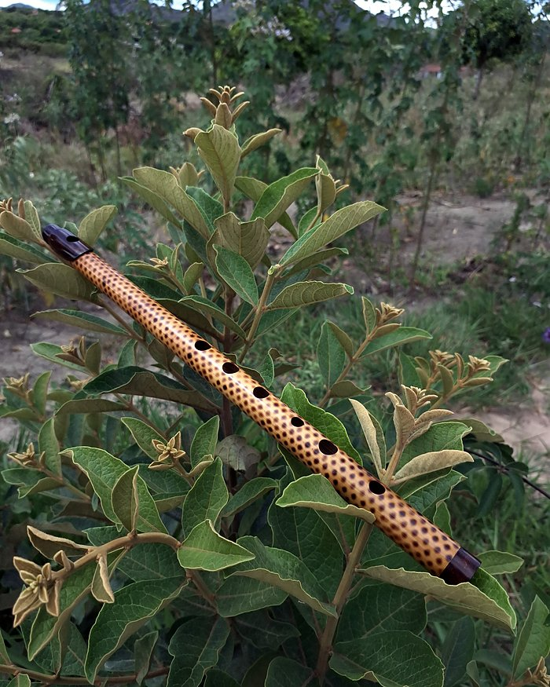

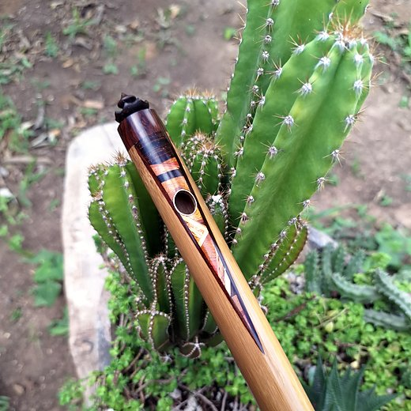

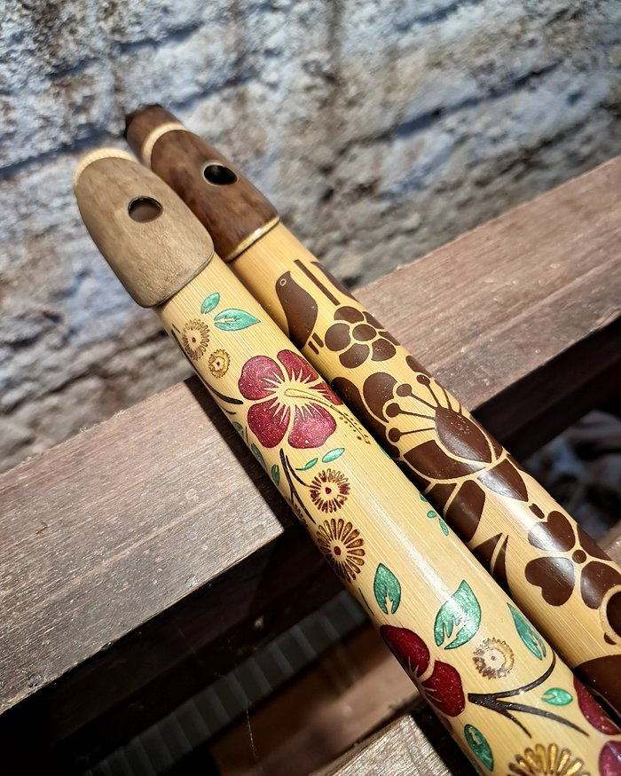

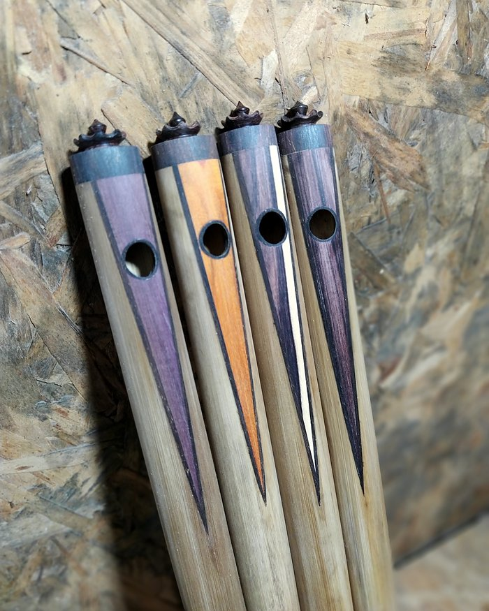
Flautas de madeira
Furo o tubo no torno com broca longa e abro o perfil interno com alargador cônico. Por dentro, a cabeça afunila em direção ao bocal: ganha volume e equilibra as oitavas. Depois selo e dou polimento no tubo por dentro, porque parede áspera tira o brilho do som.
Madeiras que tenho hoje: jacarandá, maçaranduba, jaqueira, roxinho, arariba e muirapiranga. Corpo único ou segmentada. Eu recomendo a de encaixe: é melhor de levar e de limpar, e o encaixe funciona como ajuste de afinação.

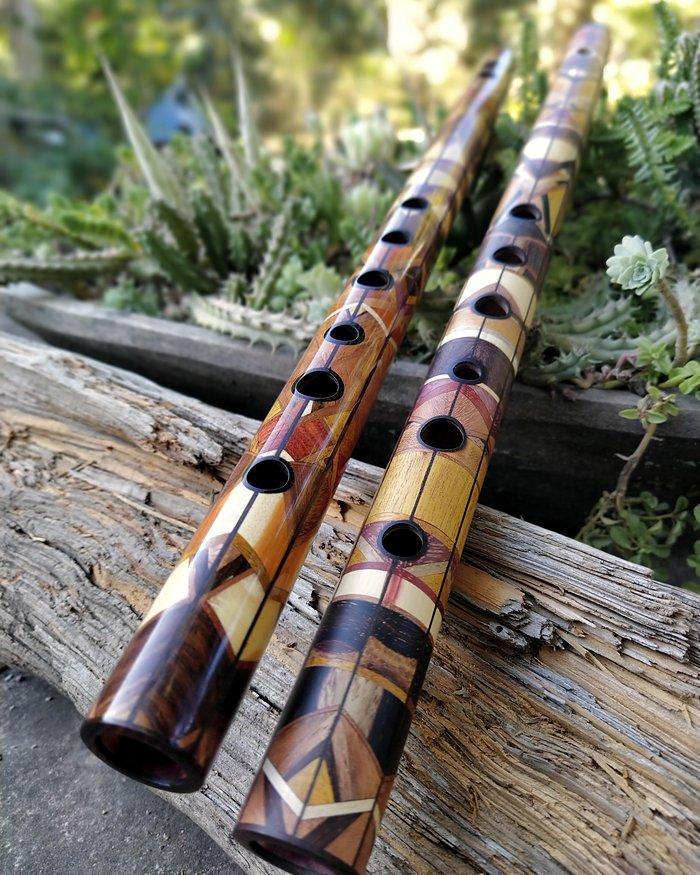

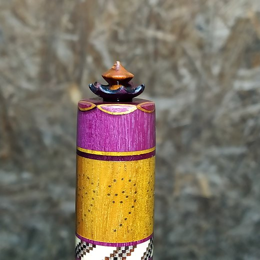

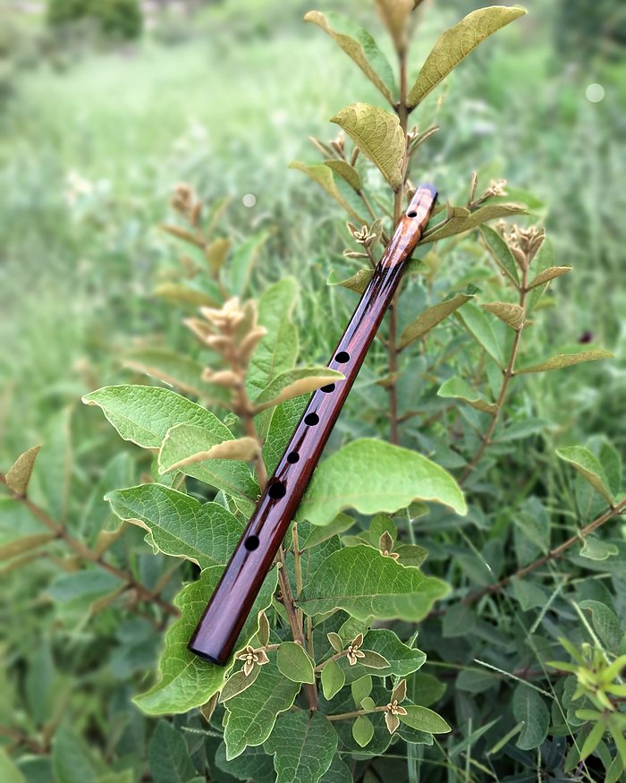

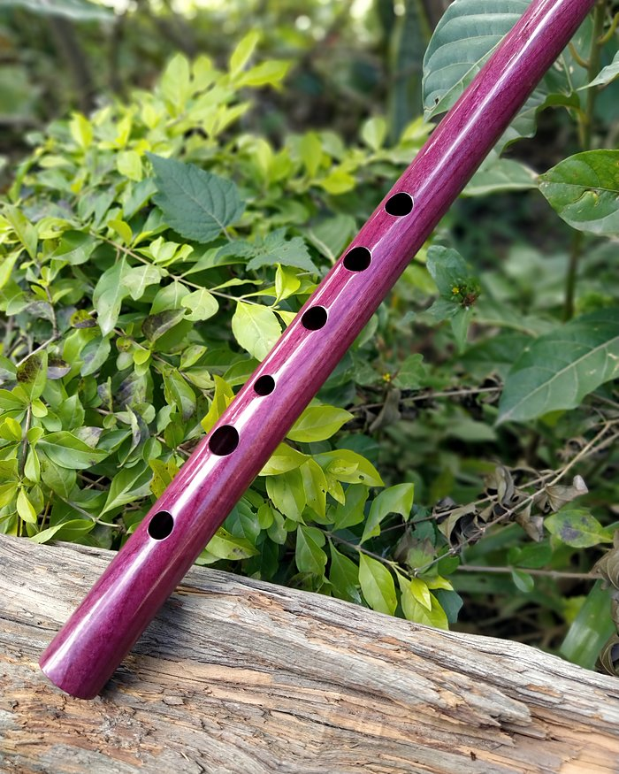
Flautas irlandesas
A irlandesa que eu faço é em Ré grave (Low D) e segue o desenho antigo: corpo cônico, cabeça cilíndrica, seis furos e nenhuma chave.
Encaixes de espiga com cortiça portuguesa, anéis de latão e coroa com stopper móvel. Em 2 partes (bocal e corpo) ou em 4 partes (bocal, barrilete, corpo e pé).

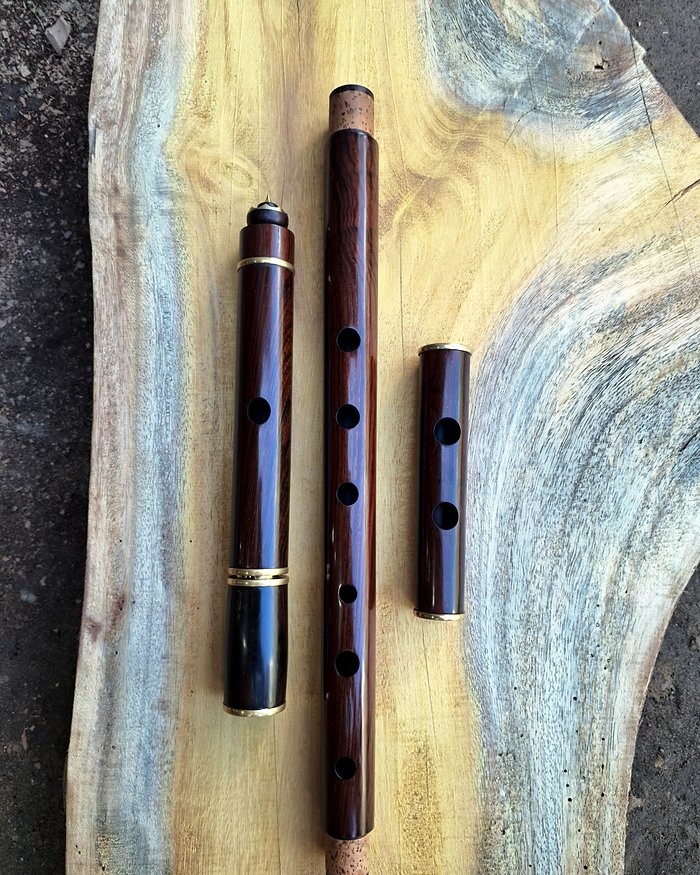

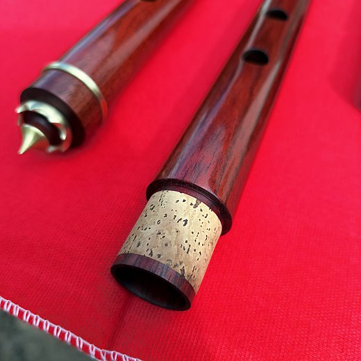

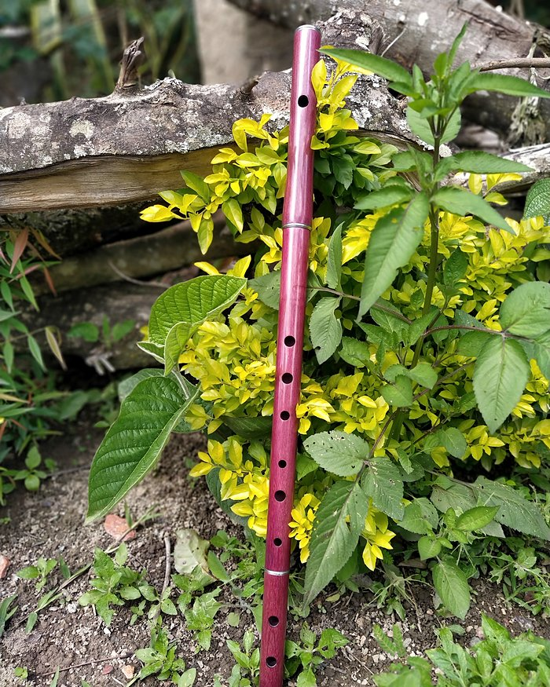
Corpo único estilo barroco
Jacarandá torneado com bulbos e frisos, sem encaixe, em Sol e em Dó agudo.

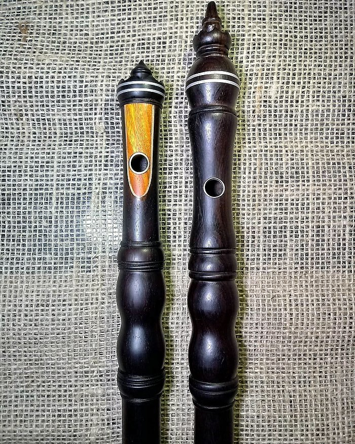

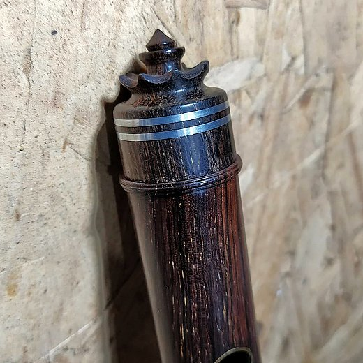
Ouça
Eu tocando. Ao lado de cada vídeo, a foto da mesma flauta.
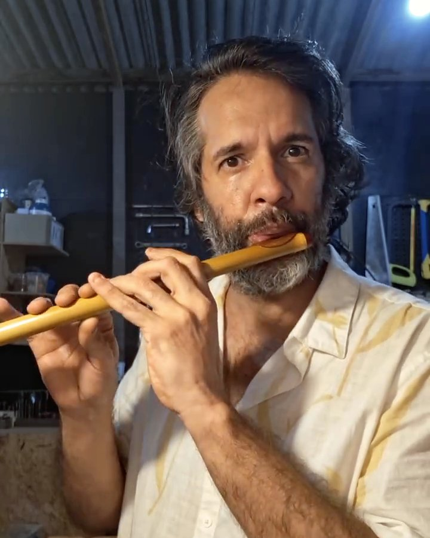
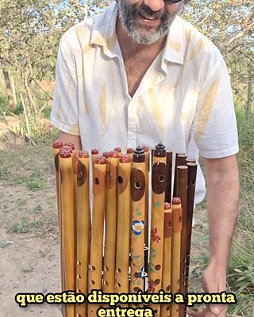
Pífano de bambuPífano de bambu em Dó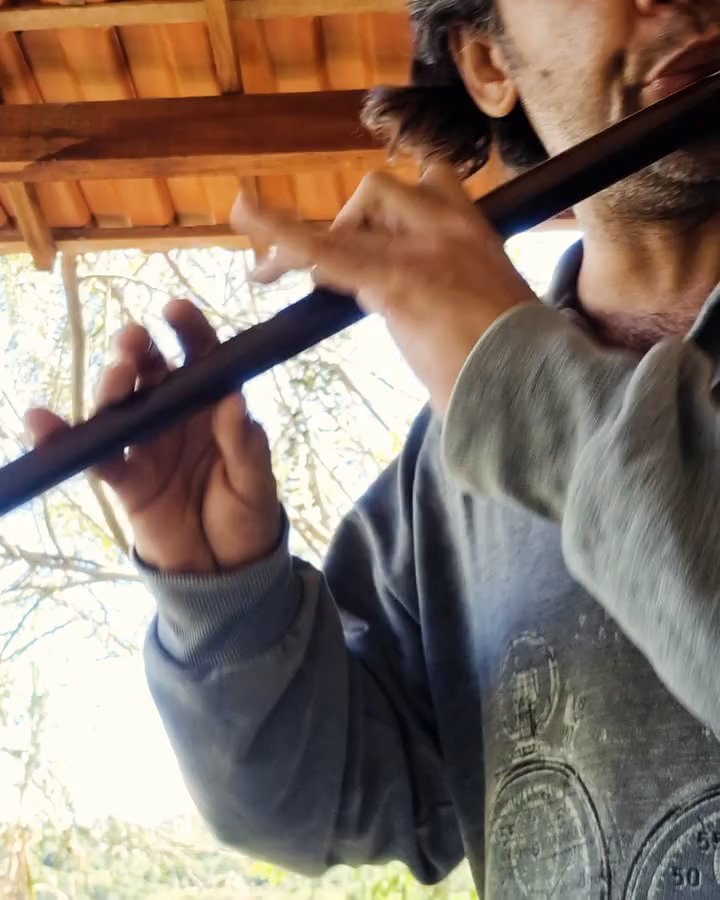
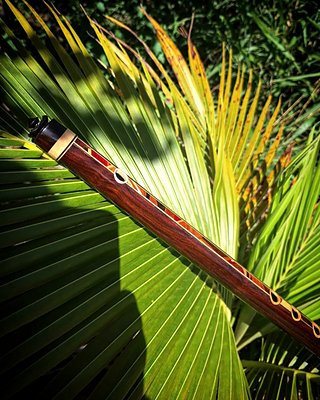
Pífano de madeiraPífano de jacarandá com marchetaria, em Sol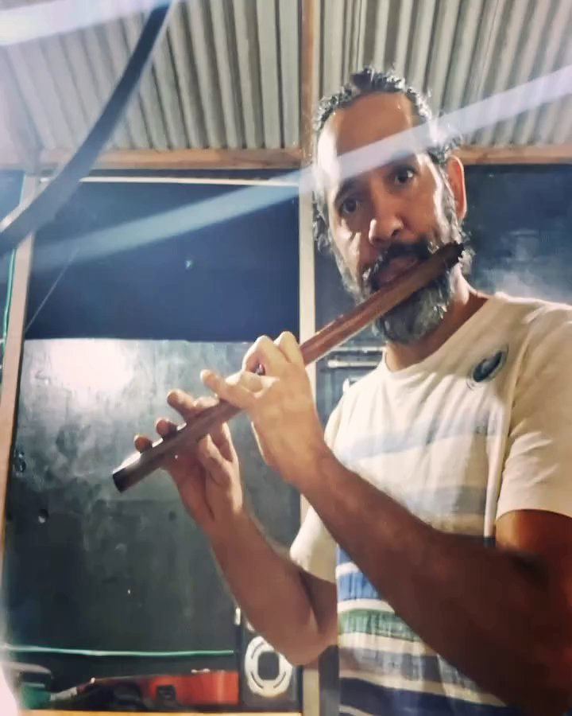
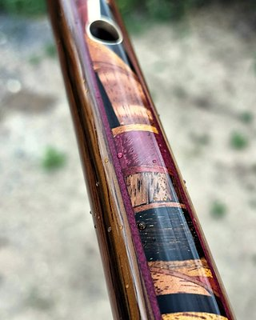
Transversal de madeiraTransversal de araribá com marchetaria, em Sol
 Flauta irlandesaIrlandesa de jacarandá em Ré grave
Flauta irlandesaIrlandesa de jacarandá em Ré graveDetalhes
Clipes curtos mostrando a flauta de perto.


Valores
A partir de, conforme o tom e a madeira. O valor exato, com os opcionais, aparece no Monte sua flauta.
Preços
- Pífano de PVCa partir de R$ 150
- Pífano de bambua partir de R$ 260
- Pífano / transversal de madeiracorpo únicoa partir de R$ 690
- Flauta irlandesa Low D, 2 partesR$ 2.100
- Flauta irlandesa Low D, 4 partesR$ 2.700
- Corpo único estilo barrocosob consulta
Frete à parte, calculado pelo CEP. Cada encaixe a mais soma R$ 400.